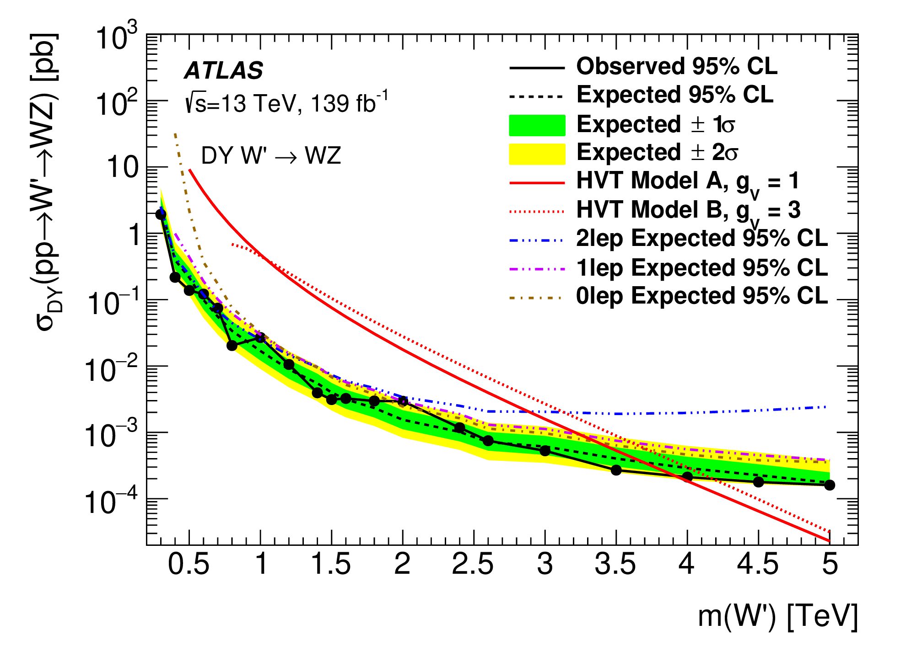

Introduction
The discovery of the Higgs boson at the LHC is yet another remarkable achievement of the Standard Model. At the same time we know that the SM has to be just an effective field theory, since it cannot provide explanations to various experimental observations such as the neutrino masses and oscillations, the existence of dark matter and the large baryon asymmetry present in the Universe. Moreover, fine tuning arguments such as the naturalness of the electroweak (EW) scale, the large hierarchy among the Yukawa couplings also seem to suggest that an ultraviolet completion of this theory is needed.
This paradigm has motivated in the last decades a huge experimental effort for the direct search for New Physics.
Dark matter searches
- Constraints on mediator-based dark matter and scalar dark energy models using 13 TeV pp collision data collected by the ATLAS detector, JHEP05(2019)142
- Search for dark matter in events with a hadronically decaying vector boson and missing transverse momentum in pp collisions at 13 TeV with the ATLAS detector, JHEP10(2018)180
- Search for dark matter in events with a Z boson and missing transverse momentum in pp collisions at 8 TeV with the ATLAS detector, Phys. Rev. D. 90, 012004 (2014)
Search for heavy resonances
{kind=link}
{kind=link}
- Search for heavy resonances decaying into a pair of Z bosons in the 4l and llvv final states using 139 fb−1 of proton-proton collisions at 13 TeV with the ATLAS detector, arXiv:2009.14791
- Search for heavy diboson resonances in semileptonic final states in pp collisions at 13 TeV with the ATLAS detector, Eur. Phys. J. C 80 (2020) 1165
- Combination of searches for heavy resonances decaying into bosonic and leptonic final states using 36 fb−1 of proton-proton collision data at 13TeV with the ATLAS detector, Phys. Rev. D 98, 052008 (2018)
- Searches for heavy ZZ and ZW resonances in the llqq and vvqq final states in pp collisions at 13 TeV with the ATLAS detector, JHEP03(2018)009
- Searches for heavy diboson resonances in pp collisions at 13 TeV with the ATLAS detector, JHEP 09 (2016 )173
- Search for an additional, heavy Higgs boson in the H→ZZ decay channel at 8 TeV in pp collision data with the ATLAS detector, Eur. Phys. J. C (2016) 76: 45
Heavy neutrinos
- Search for heavy Majorana or Dirac neutrinos and right-handed $W$ gauge bosons in final states with two charged leptons and two jets at $\sqrt{s} = 13$ TeV with the ATLAS detector, JHEP 01 (2019) 016
Others
- Search for dijet resonances in events with an isolated charged lepton using 13 TeV proton-proton collision data collected by the ATLAS detector, JHEP 06 (2020) 151
- Search for new resonances in mass distributions of jet pairs using 139 fb$^{-1}$ of $pp$ collisions at $\sqrt{s}=13$ TeV with the ATLAS detector, JHEP 03 (2020) 145